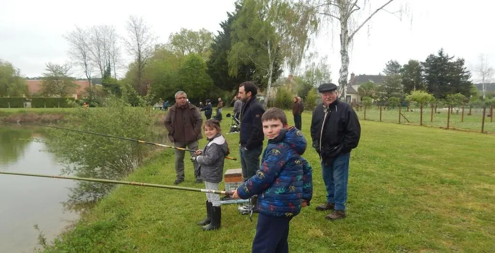

PARTENARIAT
Février - Avril 2026
Journées pêche - Lâchers de truite
La section d'Aubigné-Vaas sera présente lors des lâchers de truite organisés par la mairie d'Aubigné-Racan au plan d'eau de la commune.
Dates des journées pêche :
- Samedi 21 février 2026
- Samedi 28 mars 2026
- Samedi 25 avril 2026
Une belle occasion de rencontrer les habitants et de faire découvrir notre association lors de ces événements conviviaux.
Voir l'agenda complet